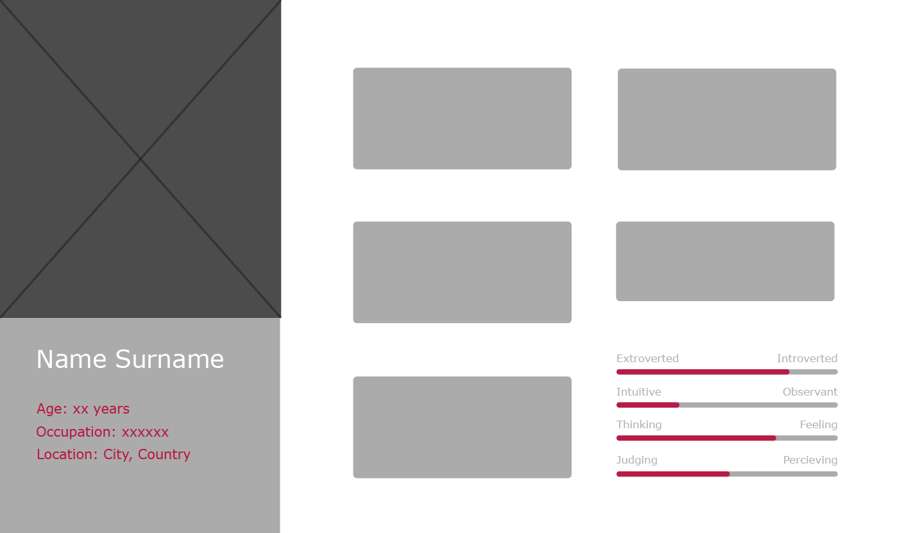
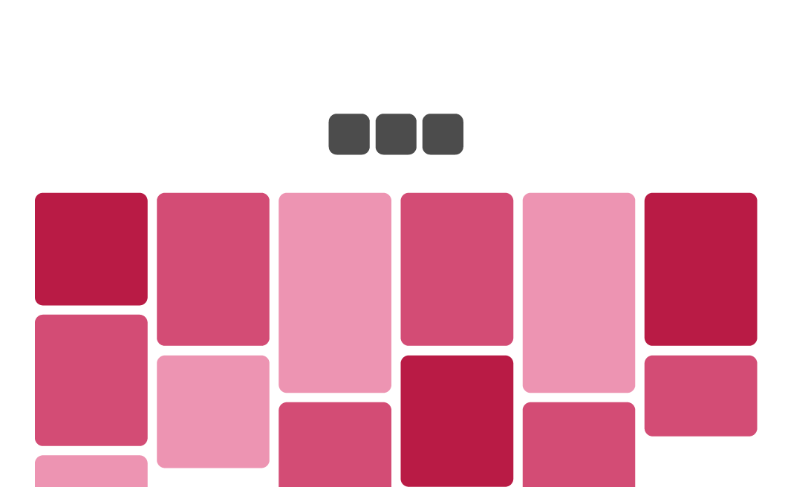

What is aesthetics
Aesthetics is the philosophical study of beauty and taste. However, what one person perceived as beautiful might be the opposite for someone else. One person’s taste can differ a lot from someone’s else. (source)
To have an understanding for aesthetics
Understanding of aesthetics is important for designers since they need to know how to design things to be visually appealing for a specific target group/user. They need to think about who will use or see the products when designing, so that it will be appealing to these people. An useful mindset when designing is to keep in mind that not everyone have the same taste and thoughts of what is aesthetically pleasing. This is because everyone's taste is influenced by a large amount of factors; both depending on who we are as a person and our feelings, but also more external factors such as our culture, past experiences, upbringing, etc. This can lead to a challenge when the client your designing for have a significantly different taste than you.
Function and aesthetics
To make something aesthetically pleasing for its target group is not just important for the purpose of making it beautiful. Aesthetically pleasing designs also make designs look more professional and well designed. Lacking in functionallity is also seen as less severe, and these flaws are more easily forgiven. This, though, might become a problem when certain products go through usability tests. (source)
This means that designs are percieved as more funcitonal when they have good aesthitecs. Asthetically pleasing design thereby affects a products functionality positively.
Aesthetics for me
For me, aesthetics means something that is beautiful and easy to the eye. The aesthetics of a product, according to me, can be seen as the result of a lot of factors, such as the use of colors, shape, feel, material, etc. It can also be influenced by external factors, not dependent on the design of the product. This can be culture, previous experiences, personalities and the point in time/era it was created.
Design process (steps)
- Understand the goal/requirements
- What am I supposed to do?
- What kind of product is it?
- To whom?
- In what purpose?
- What is the product going to be used for?
- In what kind of activities?
- When should it be done?
- Understand the user
- Ask questions such as:
- How old are you
- Do you feel like you age? What is your mental age?
- What culture do you associate yourself with?
- What is your favorite color?
- Do you like following trends?
- Do you like a specific style?
- What is your favorite movie?
- Top three of your hobbies
- Is it important for you to be on time?
- Do you see yourself as a structured person?
- What/who inspires you?
- What words would you use to describe your style?
- Name you favorite brands/logos
- First bad design that pops up in your head
- Describe something you like looking at
- Create a persona
- Take inspiration
- Create moodboard
- Pinterst
- Sketch
- Use pen and paper
- A lot of versions
- Start working on the final version
- Refine
- Remove anything redundant
- Make user test if necessary for the design
- Finish the product
Understand more about the user's taste
Is the users taste/style:
Tools to use when designing
Here are some examples on things and tools to use when greating a design. These are Persona, moodboard, Gestalt Principles, and Color theory.
Persona
The use of a persona is a good way of empathizing and create a good product for the user. To create one, you need to do user research, identify behavioural patterns, then create a believable persona. A scenarous should also be created connected to the persona. This defines when, where and how the story of the persona takes place. In other words, situations relevant to the product that is being created. (source)
Down below is a simple persona template:

Moodboard
A moodboard is a good way to gather inspiration for a project and get an overview of the visual style/feel you're aiming for. By using for example pinterst, you can easily create a board and save the images you find. 
The Gestalt Principles
The gestalt principles are rules and principles on how the human eye percieves visual elements.
Proximity
Elements that are places close to each other are seen as a group, belonging together.
Enclosure/Common Region
Elements that are in the same closed region/area is seen as a group.
Closure
We fill in gaps between images to see it as a complete shape. We prefere to see shapes as "complete".
Common Fate
Things that move similarily are percived to be in a group.
Continuity
Our eyes likes to se a continuous flow of elements, thereby it follows lines, paths and curves.
Similarity
Things that look similar is percieved as a group. Can be achieved with, for example, shapes, color and size.
Symmetry
A design should be balanced.
Figure Ground
The eye can differentiate shape from background
Color theory
Color theory is important when designing as it can influence our mood, emotions and how we behave. Shown above are different color harmonies. It is important to limit the ammount of colors you use to achieve visual balance.
Different colors evoke different kind of emotions. Below are some examples of what kind of emotions each color is associated with.
Love
Danger
Fun
Optimism
Energy
Warmth
Happiness
Attention
Nature
Growth
Success
Calmness
Comfort
Trust
Wisdom
Luxury
Royalty
Power
Sophistication
Mystery
Health
Innocence
Cleanliness